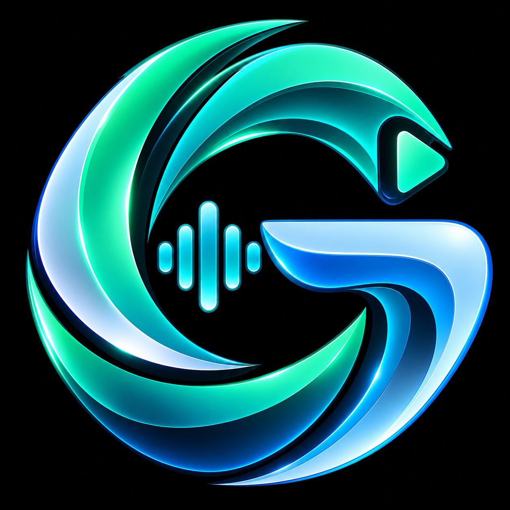

Áudio & música
A trilha é sua.
YouTube Music e Spotify no mesmo espaço, com controles de reprodução e miniplayer para acompanhar você.

glide. Baixar GlideDê play. Entre na conversa. Continue no jogo.
Música, vídeos e comunicação reunidos no Glide.
Criado para acompanhar o seu setup.
Da playlist que embala a partida à conversa depois do último round. Seu universo digital ganha um ponto de encontro.
O seu ponto de partida. Acesse música, vídeos, mensagens e comunicação em um só hub.
Escolha sua trilha, acompanhe o que importa e tenha seu grupo por perto.
YouTube Music e Spotify no mesmo espaço, com controles de reprodução e miniplayer para acompanhar você.
Salas de voz, chat e compartilhamento de tela. Um lugar para conversar e reunir seu squad.
Acesse vídeos e redes sociais no módulo de vídeo e streaming.
Uma central para organizar notificações e acompanhar mensagens.
O Glide é um projeto de Miguel Cruver, criado para reunir entretenimento e comunicação em uma experiência pensada para quem joga.
Um espaço para a música, os conteúdos e as pessoas que fazem parte do seu dia. Com a sua identidade, no seu ritmo.
Música, conteúdo e conversas.
O próximo capítulo do seu setup começa aqui.
Download em preparação. O instalador será disponibilizado aqui.
Idealizado e desenvolvido por Miguel Cruver.